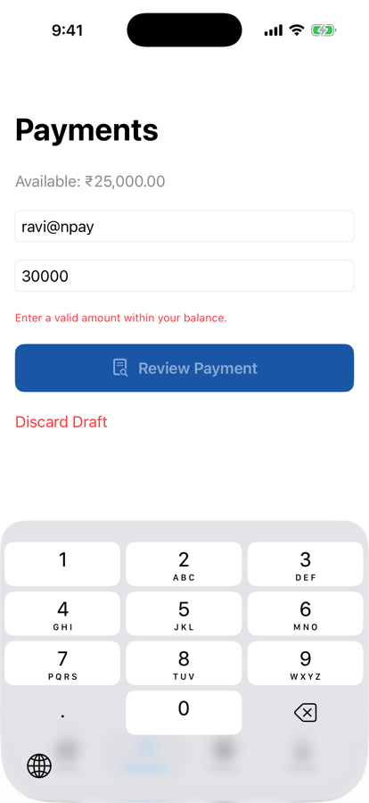

Unit 04 · Lesson 4.1
NPay works at 500 lines. What happens at 50,000? MVC, MVVM and Clean Architecture, through NPay’s own problems.
Lesson 4.1 · Outcomes
Name the responsibilities an app must separate
Compare MVC, MVVM and Clean Architecture
Describe NPay’s target architecture
Extract business rules into plain Swift
Explain why repository protocols matter
Refactor while preserving observable behaviour
Lesson 4.1 · Where we are
Unit 04 · Application Architecture & MVVM
Part 1
One store, too many jobs
Part 1 · The problem with our current NPay architecture (section 1)
@MainActor
@Observable
final class NPayStore {
var balancePaise = 2_500_000
var transactions: [Transaction] = []
var paymentDraft = PaymentDraft()
func recordDemoPayment(
recipient: String,
amountPaise: Int
) -> UUID? {
// Validate recipient
// Validate amount
// Check balance
// Deduct money
// Create transaction
// Update history
}
}Part 1 · What could go wrong? (section 1)
| Our 3.12 code | Lines | Holds |
|---|---|---|
NPayStore | 63 | balance, transactions, draft, payment rules |
PaymentsScreen | 160 | 6 state properties; 14 uses of the store |
NPayRootView | 92 | owners, tabs, every route’s screen |
Counted in the Unit 3 app (authored measurement).
Part 2
Clear responsibilities, clear boundaries
Part 2 · What is application architecture? (section 2)
Part 2 · MVC, MVVM and Clean Architecture (section 3)
Simplified teaching diagrams: real architectures have more relationships.
Part 3
View, ViewModel, use case, repository
Part 3 · Our target NPay architecture (section 4)
Part 3 · How MVVM changes state flow (section 7) · conceptual
Part 4
Move validation out of the View
Part 4 · Move validation out of the View (section 5)
enum PaymentValidationError: Error {
case emptyRecipient
case invalidAmount
case insufficientBalance
}
struct PaymentValidator {
func validate(
recipient: String,
amountPaise: Int,
balancePaise: Int
) throws {
guard !recipient.trimmingCharacters(
in: .whitespacesAndNewlines
).isEmpty else {
throw PaymentValidationError.emptyRecipient
}
guard amountPaise > 0 else {
throw PaymentValidationError.invalidAmount
}
guard amountPaise <= balancePaise else {
throw PaymentValidationError.insufficientBalance
}
}
}Part 4 · Test the validator without launching NPay (section 6)
let validator = PaymentValidator()
do {
try validator.validate(
recipient: "ravi@npay",
amountPaise: 150_000,
balancePaise: 2_500_000
)
print("Valid payment")
} catch {
print("Validation failed:", error)
}Valid payment
| Input (balance 2,500,000) | Result |
|---|---|
| "ravi@npay", 150,050 | valid |
| " ", 150,000 | emptyRecipient |
| "ravi@npay", 0 | invalidAmount |
| "ravi@npay", −100 | invalidAmount |
| "ravi@npay", 3,000,000 | insufficientBalance |
| "ravi@npay", 2,500,000 | valid (the whole balance) |
More cases, run the same way (ours).
✔ Test run with 5 tests in 1 suite passed
Part 5
Depend on a contract, not an implementation
Part 5 · Why protocols matter (section 8)
protocol PaymentRepository {
func sendPayment(
recipient: String,
amountPaise: Int
) async throws -> UUID
}
struct DemoPaymentRepository: PaymentRepository {
func sendPayment(
recipient: String,
amountPaise: Int
) async throws -> UUID {
UUID()
}
}id: 455AE80B-DDD4-48D2-AD5C-125C804069CF
balancePaise afterwards: 2500000
Part 6
Same app, better structure
Part 6 · Xcode lab: first architecture refactoring (section 10)
// PaymentsScreen
private var isValid: Bool {
guard let amount = parsedAmount else {
return false
}
do {
try PaymentValidator().validate(
recipient: store.paymentDraft.recipient,
amountPaise: amount,
balancePaise: store.balancePaise)
return true
} catch {
return false
}
}NPayStore.recordDemoPayment calls it| Same script, simulator | 3.12 code | 4.1 code |
|---|---|---|
| empty recipient, ₹1 | disabled | disabled |
| blank recipient, ₹1 | disabled | disabled |
| zero amount | disabled | disabled |
| ₹30,000 (over the balance) | disabled | disabled |
| ₹25,000 (the whole balance) | enabled | enabled |
| ₹1,500.50 → confirm | ₹23,499.50 | ₹23,499.50 |
| store: “”, ₹30,000, ₹0 | rejected | rejected |
Part 6 · Invalid payments are still rejected (section 10)

₹30,000 against ₹25,000
Part 7
Ten lessons to a complete MVVM NPay
Part 7 · Unit 4 learning sequence (section 9)
| Lesson | Topic | NPay implementation |
|---|---|---|
| 4.1 | Architecture fundamentals | Extract payment validation |
| 4.2 | MVVM internals | PaymentViewModel |
| 4.3 | Observation framework | Observable ViewModels |
| 4.4 | Dependency injection | Inject repositories and services |
| 4.5 | Repository pattern | Demo payment repository |
| 4.6 | Domain models and use cases | SendPaymentUseCase |
| 4.7 | UI state modeling | Loading, success, error |
| 4.8 | Modular project structure | Feature organization |
| 4.9 | Architecture testing | ViewModel and use-case tests |
| 4.10 | Integration lab | Complete MVVM NPay |
Lesson 4.1 · Recap
Separate responsibilities
presentation, state, rules, data, navigation
MVVM plus Clean ideas
ViewModel per screen; use cases and repositories behind it
Refactor, then verify
PaymentValidator: 5 tests pass; NPay behaves the same
Review
Check your understanding · 1 of 9
What is the main responsibility of a ViewModel?
State and behaviour for one screen; SwiftUI draws.
Common trap: Turning the ViewModel into a second view.
Check your understanding · 2 of 9
Can MVVM and Clean Architecture be used together?
MVVM for presentation; use cases and repositories behind it.
Common trap: Treating architectures as either/or.
Check your understanding · 3 of 9
Why extract PaymentValidator from SwiftUI?
Five tests ran with no app and no simulator.
Common trap: Thinking extraction is about speed.
Check your understanding · 4 of 9
What does a repository protocol provide?
Demo now, API later, same contract.
Common trap: Coupling ViewModels to one data source.
Check your understanding · 5 of 9
Should a ViewModel directly control pixel rendering?
It exposes state; the view and SwiftUI render it.
Common trap: Mixing layout into the ViewModel.
Check your understanding · 6 of 9
validate(recipient: "ravi@npay", amountPaise: 2_500_000, balancePaise: 2_500_000). What happens?
The rule is <=: the whole balance is allowed.
Common trap: Off-by-one on a boundary.
Check your understanding · 7 of 9
validate(recipient: " ", amountPaise: 150_000, balancePaise: 2_500_000) throws…
Whitespace is trimmed before the empty check.
Common trap: Forgetting the trim.
Check your understanding · 8 of 9
After try await DemoPaymentRepository().sendPayment(recipient: "ravi@npay", amountPaise: 150_050), NPay’s balance is…
A contract demo: it returns an ID and touches no state.
Common trap: Assuming a conformance does real work.
Check your understanding · 9 of 9
From Lesson 3.12: who owns paymentsPath?
Navigation state belongs to the router.
Common trap: Mixing navigation into the data owner.
Lesson 4.1 · Where this goes next
| Lesson | Topic | Builds on today |
|---|---|---|
| 4.2 | MVVM internals | PaymentViewModel calls PaymentValidator |
| 4.5 | Repository pattern | a real demo repository behind PaymentRepository |
| 4.6 | Use cases | SendPaymentUseCase owns the rules |
| 4.9 | Architecture testing | tests like today’s five, for ViewModels too |
Lesson 4.1 · Lab
Extract the rules; keep the behaviour.
PaymentValidator.swift.Lesson 4.1 complete
Next: Lesson 4.2 — MVVM Internals & PaymentViewModel